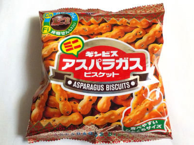

ギンビスのミニアスパラガスビスケット。
2023/11/22

コンガリ焼けてて香ばしいビスケットに、ゴマが入って更に香ばしくなってます。
カリカリっと硬めの食感が、噛んでで気持ちよかったです。
シンプルな塩味なので、飽きずにドンドン食べてしまいました。
東京都中央区日本橋浜町13-23-3
2023/11/22

コンガリ焼けてて香ばしいビスケットに、ゴマが入って更に香ばしくなってます。
カリカリっと硬めの食感が、噛んでで気持ちよかったです。
シンプルな塩味なので、飽きずにドンドン食べてしまいました。